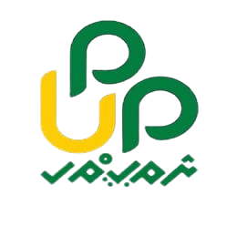
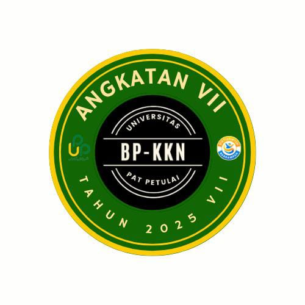
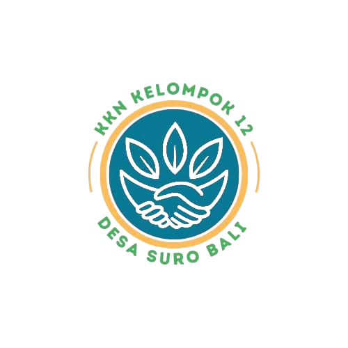
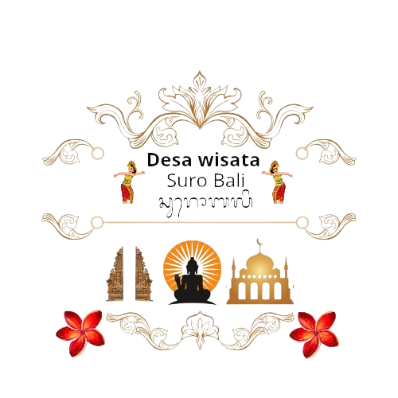

Desa Suro Bali
Potensi Desa
- Wisata: Pura, Vihara, Panorama Alam
- Pertanian: Kopi, Sayuran Organik
UMKM
Beberapa produk unggulan UMKM Desa Suro Bali antara lain:
- Salak Pondo
- Jeruk Bali
- Salak Bali
- Penyewaan Baju Adat Bali
Kontak
Alamat: Desa Suro Bali, Kecamatan Ujan Mas, Kabupaten Kepahiang
Email: pemdes.surobali@gmail.com
Instagram: @desasurobali